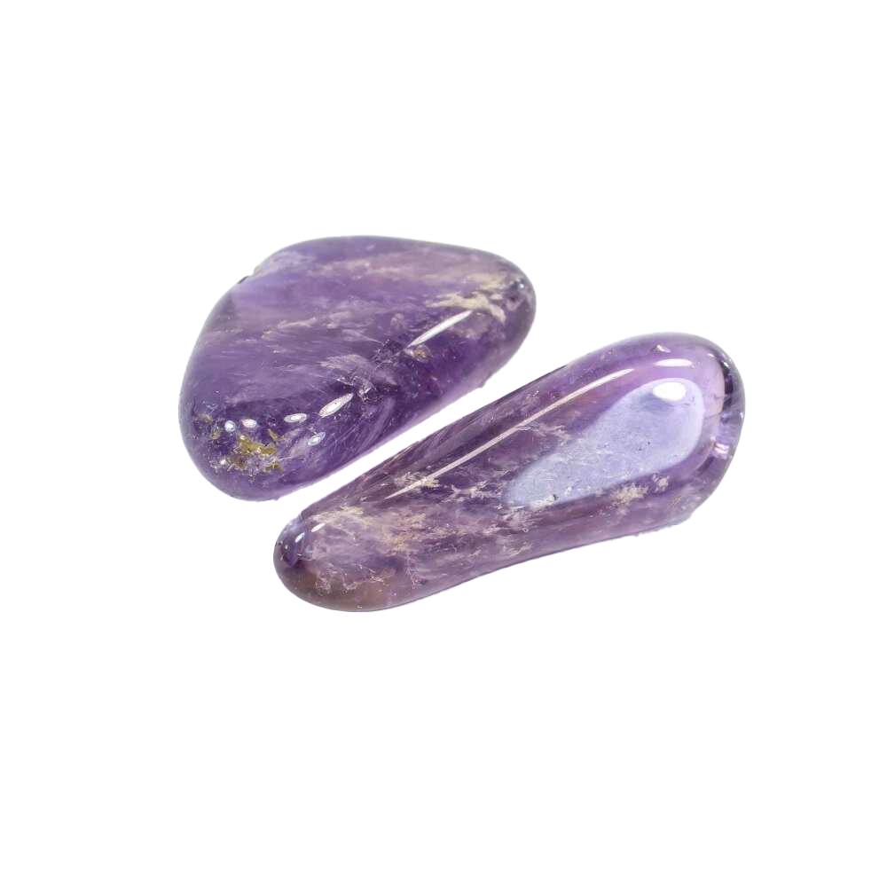

RosenquarzRosenquarz, der „Stein der Liebe“, hat folgende Wirkungen:
|
|  |
AmethystAmethyst, ein faszinierender violetter Edelstein, bietet zahlreiche Vorteile:
|
BergkristallBergkristall, ein klarer und reinigender Edelstein, bietet eine Vielzahl von Vorteilen:
|
AquamarinAquamarin, ein zartblauer Edelstein, bietet eine Vielzahl von Vorteilen:
|
TurmalinTurmalin, ein vielseitiger Edelstein mit einer breiten Farbpalette, bietet eine Reihe von Vorteilen:
|